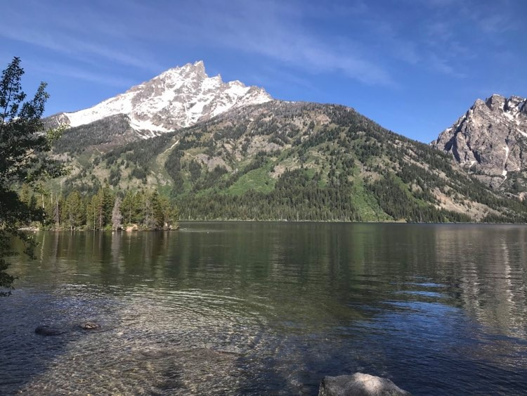
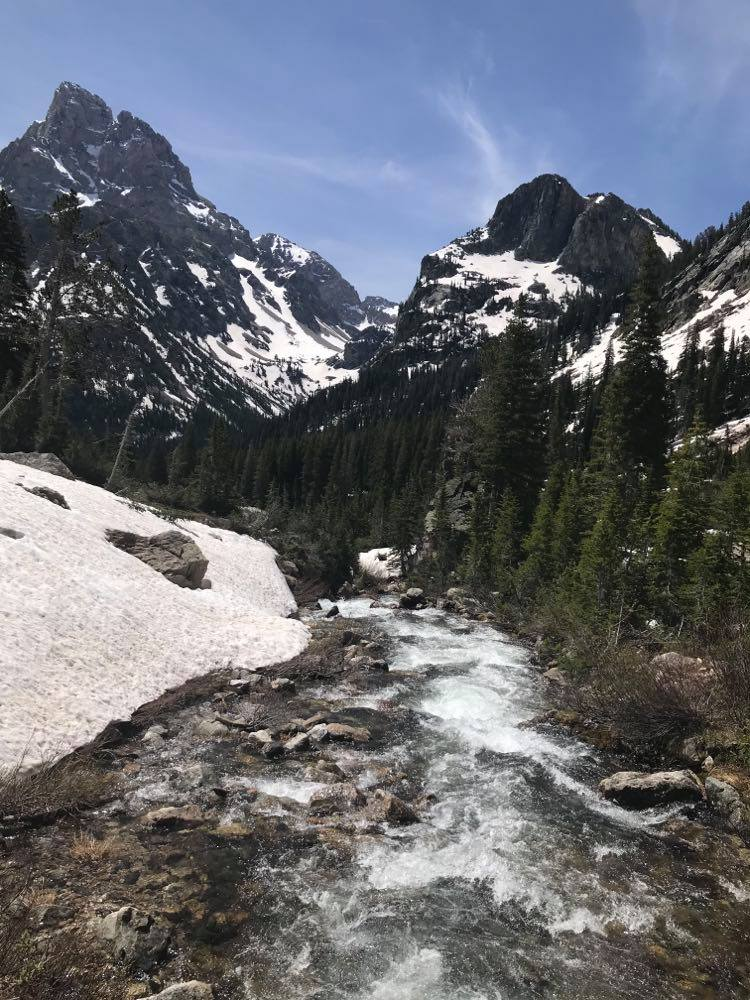
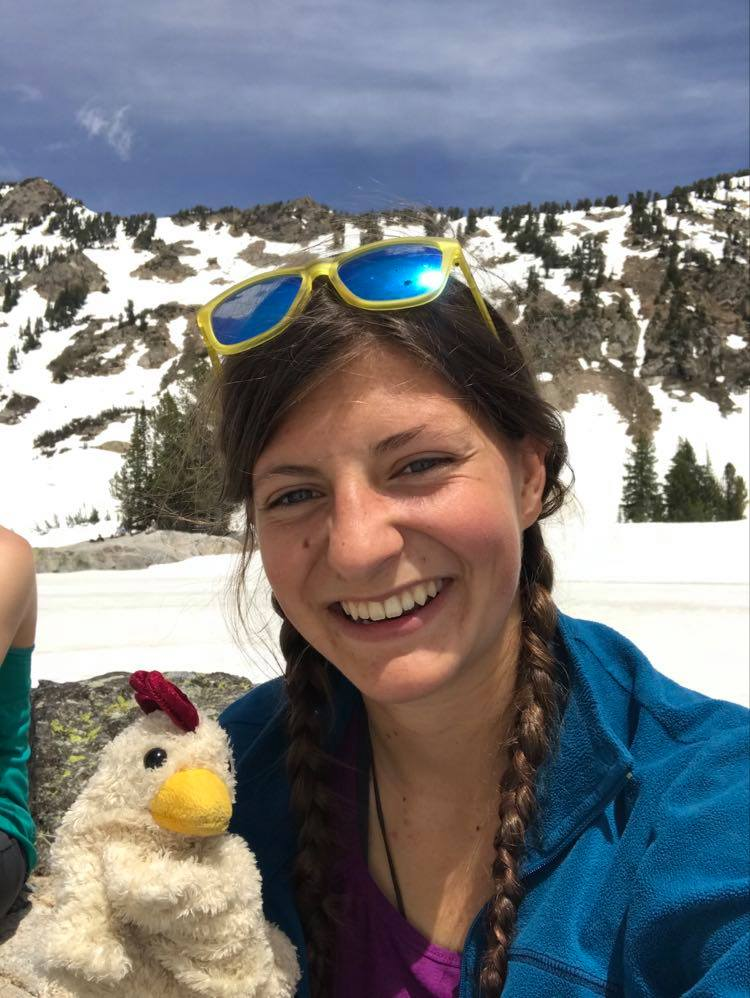

My Blog
Agggghhhh it was so beautiful! (Disclaimer every inch of my body is sore or blistered or bug bitten)
We started the day at 5:45 which for my sleep clock was 4:45 which means after eating my breakfast of champions (Pop Tarts and Oatmeal) I passed out leaving Alana alone to drive. I woke up when we reached the Jenny Lake Ranger station where a strange woman in a mask told us that they weren't yet issuing backcountry permits. This is a good thing. And so without further ado (I'm so tired I can't spell I know that's wrong) we packed some snacks, warm clothing, and a certain hand puppet chicken and were off. The first two miles ringed Jenny Lake. It was beautiful and flat. We saw almost no one else and I thought that just maybe the parks are empty and then at the two mile mark we came upon the ferry. You see all the people I didn't see had payed the 20$ to get a boat ride across the lake. 20$ is more than I make in a week so this clearly wasn't an option. But anyways after 2 miles of relative solitude we were ringed in by people. Some of these people didn't even look like they should be in the middle of the woods. For example there was a lady with gold dangly earrings and golden slides. Why? Why? Maybe its more of that there are going to be pictures taken of me mentality. Alana and I decided that you can recognize the true hikers in a few simple ways. Any time you might be wondering ask yourself a few simply questions. Are they Dirty? Do they Smell? Do they have a dazed look in their eye? Are there little bits of forest in their hair? Do they have a pet Marmot? Okay not really the last one
I can't really blame how many people were out there because it was stunning. We hiked to a waterfall and then past it to Inspiration Point. (I know not nearly as catchy as Jackass Pass) This point overlooked all of Jenny Lake and the vast open plane beyond it. We left a lot of the people behind there-gold slides just don't cut it. From inspiration point we hiked up cascade canyon and after about a mile it finally dawned on me. It's called cascade because there is a rushing might I even say cascading creek flowing in the base of the canyon. Right near the entrance to the canyon there were several sand bags. If anyone can tell me why (I hypothesized they were beanbags but then why fill them with dirt) I would love to know. We ran into some British Ladies so that was cool. When they asked how long we'd been hiking and we told them they seemed impressed. In my mind however they were on the same trail and so had hiked just as far. It doesn't matter that I put in an extra two miles getting to the trail. At the end of the canyon we found the chillest mule deer I have ever seen. He just kind of stared at us for a minute an sauntered off. I should have known it was going to be a day as when after Alana and I stopped for snacks (trail mix for those of you who might care) and I was stiff standing up. I told Alana that I'm getting old and she kind of pointed out I can't use that one on her (snaps fingers sadly).
After hiking six miles in we then began the climb up to Lake Solitude. (inspiring name right?) The view got a thousand times better but it was also mostly through snow fields. Everyone we saw along that trail looked like they'd had a little much to drink as they staggered along. When asked by a fellow hiker if we knew where the lake was we responeded at the end of the trail (which may or may not have been the actual trail) Not surprisingly we didn't see him up at the lake. The trail through the snow wasn't super well worn but with a little detective work we followed if not the trail where someone else had been. Because this is my life I was at one point leading a group of 7 up while quietly praying please don't let me do anything stupid or take these people over a river. As much as I love popsicles I didn't want randycicles or megcicles. (I have no idea what these peoples names were). Along the way were encouraging signs that showed us that we were along the trail. For example there was a sign demonstrating what I assumed was a campsite but in reality was a snow field. Right near the top we discovered a bridge that crossed the main outlet from the lake following the footprints where the other people had been I realized about halfway across the snow over which I thought was the bridge that the bridge couldn't possibly be this wide. Luckily for me there were no Clairecicles. Finally, we topped out and over looked what would have been a beautiful lake but was instead a frozen flat space. There was however, some very blue water in places. It didn't matter that the lake was frozen because we were ringed in by snow covered mountains and it was pretty incredible.
While eating our lunch although I'm not sure if I can call it that because I was simply eating peanutbutter we saw the trail up to the pass. Sure it went across snow covered fields and sure no one else had done it but we decided to give it a try. We made it about 100 feet above the lake before looking down and realizing that slipping would be a very long very tragic sled ride. It probably would have been pretty epic. Long story short even though we could have made it we were adults and didn't do something incredibly dangerous and slightly stupid. (Claire and Alana:1 Mountain pass:0)
On the way down we got to watch a guy slide down one of the hills on his butt. His buddy noticed us and said that he'd bet that we could do it a lot more gracefully. The other guy made some excuse like "Of course they can they have skis" Which we didn't although we did have trekking poles. We did show him up though sliding gracefully down the hill on our feet. I felt very accomplished until a few minutes later when my foot slipped I turned a piroutte (probably spelled that wrong too) and fell over. All was well going down because there was a clearly marked trail due to how much foot traffic it had gotten in the last few hours. Let me rephrase that all would have been going well if it wasn't Claire Montowski writing this blog. I managed to lose the trail and we had to wander around and climb some rocks before we found it and hiked back too it. Thankfully we were in a valley so if worse came to worse we could have just followed it. I'm glad we didn't though because there was a river flowing through the valley and sooner or later we would have had to cross it. This may have made the hike quicker considering that the river dumps into Jenny Lake and we could've saved a lot of time.
By the time we made it to the fork which was our six miles from trailhead mark we couldn't take a break due to the fact that our muscles would stiffen and they we'd have to stagger down the trail for a few hundered yards before loosening up. We were hiking pretty fast because we couldn't stop and we were tired and so the only solution was to get it done. However, as a result of our speed walking we passed a lot of people. I thought Alana was going to explode when these 3 boys in their 20s didn't notice us for literally 20 minutes and just talked about how they could pretend to be moose. I mean what? Speaking of Moose I nearly died of a heartattack and potentially a moose attack when as we were walking along the trail maybe 50 feet from the river there was a snuffling and stamping noise. I kind of started hyperventaliting and that didn't get better when I saw the bull moose. Surprise we didn't die we just walked pass it carefully while talking. Well Alana was talking I was praying. Right after we passed it it went up on the trail. I couldn't help but thanking God that 1 we hiked super fast and 2 we finally got passed the guys who wouldn't move.
Three miles from the car we stopped at inspiration point to eat a snack. I really didn't think that either of us were going to be able to move again and I'll admit as I limped to the best of my ability down the hill I envied the people running around. (There used to be a time when I could do that) The last 2 miles were a test of will power but also fairly easy. There were these two hippies walking behind us and they kind of kept me going. Right at the end of the trail we saw another moose. This one was just munching on some leaves and didn't pay us any mind. Of course this was right by the visitor center and so everybody and their mom was running to get a picture. I mean I got a picture but I had to walk past it. The walk from that point too the car was about 200 meters but it felt like 8 miles. I'm really beginning to think that I might be out of shape but maybe humans just get tired after hiking 18 miles 6 of those through snow. While on this last part of the hike Alana and I discussed Triatholons more specifically Iron Man Triathalons and why anyone in their right mind would ever do something like that. This is a question I would like answered if anyone happens to know.
We were driving along the road towards the place we are staying tonight when we came across a huge line of cars. It was a little confusing until we saw the Mama Grizzly and four cubs.(Yes they were adorable) That took our bear count from 0 to 5 in less than a second. They crossed the road right in front of us. It was incredibly cool. You guys might hate me for this but I didn't get a picture because I was completely distracted by the baby bears cuteness. However, while we were in our car most everyone else had gotten out of their car as one does when there is a Mama Bear and Cubs. I also swear that there were at least a 100 people with super nice cameras and foot long lenses. Why did everyone have a camera like this? Maybe because these were the people who didn't hike across the lake and into the Tetons and maybe just used their cameras to make it look like they did. Probably not but it's a possiblity. We finally made it too our Walled Tent which is basically a cabin they were too lazy to finish building. Also if any of you remember the Hanta Virus outbreak in Yosemite yep those were in walled tents. Fingers crossed that doesn't happen. We are both a little salty that we had to buy firewood 8.50 for like 5 pieces. And oh you wanted kindling that'll be another 3$. Instead of buying starter we are using the park newpaper but as of yet it just burns interesting colors and hasn't really started a fire. Dinner tonight consisted of Backpacking Mac'N'Cheese and I have never eaten anything that tastes that good. Unfortunately the bugs were super bad and so dinner wasn't enjoyable because we both forgot bugspray. Ahhh well. While I have several blisters and my body is shaking from exhaustion, today was incredibly amazing and beatiful as I hope these pictures might help show. Anyways tune in next time when I might write it's happened Alana was mauled by a pack of rabid marmots. Hopefully not that would be incredibly scary.
Night Ya'll
-Claire
I know its a day late I had to wait for service